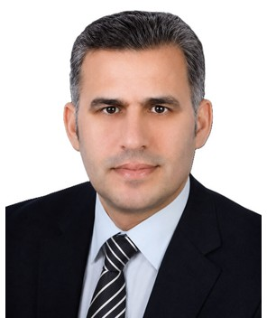

Profile
Shahin Ahmedoglu is a professor in the history of Islamic sects at the Faculty of Islamic Sciences of Kırıkkale University. The professor title is dated 7 March 2022. He received the associate-professor title from the Interuniversity Council on 19 October 2015. His doctorate, in the history of Islamic sects, is from Ankara University (2001–2005). His master’s degree in the same field is from Ankara University (1998–2001), and his bachelor’s degree in theology is from Ankara University (1993–1998). Since 2023 he has chaired the department of basic Islamic sciences and the program in the history of Islamic sects.
Work experience
Kırıkkale University
2023–presentChair, Department of Basic Islamic Sciences
Kırıkkale University
2023–presentChair, history of Islamic sects
Kırıkkale University
2017–2023Chair, kalam and doctrinal Islamic sects
Faculty of Theology, Iğdır University, Turkey
2010–2015Assistant Professor
Education
Professor
7 March 2022History of Islamic sects
Kırıkkale University
Associate Professor
19 October 2015Theology, basic Islamic sciences, history of Islamic sects
Interuniversity Council, Ankara
PhD
2001–2005History of Islamic sects
Ankara University, Institute of Social Sciences
Master’s degree
1998–2001History of Islamic sects
Ankara University
Bachelor’s degree
1993–1998Theology
Faculty of Theology, Ankara University
Publications
Books and textbooks
1. Ahmetoğlu, Ş. Şiî-İmâmiyye’nin Mezhepler Tarihi Yazıcılığı. İlahiyat. ISBN 978-605-4696-39-0. 2014.
2. Ahmetoğlu, Ş. Mezhepler Tarihinin 100’ü. OTTO. ISBN 978-605-9621-89-2. 2017.
3. Ahmetoğlu, Ş. Mezhepler Tarihinin 200’ü. OTTO. ISBN 978-605-2300-03-9. 2017.
4. Ahmetoğlu, Ş. İslam Mezhepleri I. Gazi Yayınevi. ISBN 978-625-7855-53-2. 2020.
5. Ahmetoğlu, Ş. İslam Mezhepleri II. Gazi Yayınevi. ISBN 978-625-7216-09-8. 2020.
6. Ahmetoğlu, Ş. Vehhabilik-Selefilik İdeologiyası (Azerbaycan Türkçesinde). Dava Adamı. ISBN 978-605-0624-43-4. 2020.
Book chapters
1. Ş. Ahmetoğlu. “Ebû Mûsa el-Murdâr (840)”. İslam’ın Akılcıları / Mu’tezilî Öncüler. ed. M. Azimli-Ö. Kanter. İstanbul: Mana Yayınları, 2021. ss. 121-123.
2. Ş. Ahmetoğlu. “Cafer b. Mübeşşir es-Sekafî (849)”. İslam’ın Akılcıları / Mu’tezilî Öncüler. ed. M. Azimli-Ö.Kanter. İstanbul: Mana Yayınları, 2021. Ss. 132-134.
3. Ş. Ahmetoğlu. “Ca’fer b. Harb (851)”. İslam’ın Akılcıları / Mu’tezilî Öncüler. ed. M. Azimli-Ö. Kanter. İstanbul: Mana Yayınları, 2021. ss. 140-142.
4. Ş. Ahmetoğlu. “Aras Havzası Saatlı Âlimlerinden Molla Musa’nın Hayatı, Elyazmaları ve Bazı Görüşleri”. Aras Havzası Uleması ve Tarihi Şahsiyetleri. ed. M.H. Alma vd. İstanbul: Hiperyayın
5. 2021Ş. Ahmetoğlu. Ss. 56-71. “Kacarlar Dönemi Dinî-Mezhebî Hareketler.” Modern İran Tarihi- Kaçar Hanedanı’ndan İslam Devrimi’ne. Ed. Osman Karacan. İstanbul: Selenge Yayınları, 2021. Ss. 519
6. 532.Ş. Ahmetoğlu. “Âhiret’e İman.” İslam İnanç Esasları. Ed. Vechi Sönmez-Hilmi Karaağaç. İstanbul: Lisans Yayıncılık, 2021. ss. 255-269.
7. Ş. Ahmetoğlu. “İmâmiyye/İsnâaşeriyye.” İslâm Mezhepleri Tarihi. Ed. Mehmet Saffet Sarıkaya – Mehmet Ümit. Ankara: Nobel Yayınları, 2020. Ss. 99-124.
8. Ş. Ahmetoğlu. “Eyyûbîler’in Mezhebî Siyaseti.” Eyyubiler’de Siyasî ve Ekonomik İlişkiler. Ed. Abdulhalim Oflaz vd. İstanbul: Hiperyayın, 2020. ss. 305-324.
9. Ş. Ahmetoğlu. “İmadeddin Nesimi’nin Kur’an ve İnsanla İlgili Bazı Görüşleri.” “Azerbaycan elyazmaları dünya kitabhanalarında”: IV beynelhalk elmi-nezeri konfransın materialları. Böyük Azerbaycan şairi İmadeddin Nesiminin 650 illik yubileyine hesr olunur. Bakı, 12 oktyabr 2019-cu il. (ISSN 2410-5600 ISSN-L: 2663-998X). Bakı: Elm ve Tehsil, 2019. ss. 39-47.
10. Ş. Ahmetoğlu. “Globallaşma, Din, İslam”. Globallaşmaya Doğru. Bakü: “QASİM” Yayınları, 2006. ss. 92-101. Müzakere
11. Ş. Ahmetoğlu. “Bekir Kuzudişli’nin “Yüz Elli Uydurma Sahâbî Var Mı? Murteza el-Askerî’nin Hamsûne ve Mie Sahâbîyyin Muhtelakin Adlı Kitabındaki İddialarının Tahlili” Adlı Tebliğin Müzakeresi”, İslâm Medeniyetinin Kurucu Nesli Sahâbe-Sahâbe Kimliği ve Algısı. Tartışmalı İlmi Toplantı, İstanbul: Ensar Yayınları, (2013). Ss. 299-305.
Peer-reviewed journal articles
1. Ş. Ahmetoğlu. “İslam Mezhepleri Tarihi’nde Karizmatik Liderlik Anlayışı: Hz. Ali Örneği”. Milel ve Nihal İnanç, Kültür ve Mitoloji Araştırmaları Dergisi 7/3 (2010): 167-188.
2. Ş. Ahmetoğlu. “Muhammed Cevâd Meşkûr’un Hayatı, Eserleri ve Mezhepler Tarihçiliği”. e-Makâlât Mezhep Araştırmaları 6/1 (2013): 93-122.
3. Ş. Ahmetoğlu. “Serbedârî Hareketi ve Temel Görüşleri”. e-Makâlât Mezhep Araştırmaları Dergisi 7/1 (2014): 129-154.
4. Ş. Ahmetoğlu. “İslam Mezhepleri Tarihi Dersinin Aktüel Meseleleri”. Azerbaycan İlahiyyat İnstitutu “Din Araşdırmları” Jurnalı 1/2 (İyun 2019): 51-75.
5. Ş. Ahmetoğlu. “Azerbaycanlı Âlim Şeyh Hasan Mollazâde Gencevî’nin Hayatı, Eserleri ve Görüşleri”. E-Makâlât Mezhep Araştırmaları Dergisi 12/2 (Güz 2019): 472-516.
6. G. Y. Ahmetoğlu-Ş. Ahmetoğlu. “Şiîliğin Hint Coğrafyasına Girişi”. Turkish Journal of Shiite Studies 2/1 (Temmuz 2020): 32-51.
7. Ş. Ahmetoğlu. “Modern Dönem Şiîlik Eleştirileri Bağlamında Ahmed Kesrevî’nin Görüşleri ve Pâkdinîyân Hareketi”. Turkish Journal of Shiite Studies 2/2 (Aralık 2020): 126-154.
8. Ş.Ahmetoğlu- H. Demir. “Ebû’l-Kâsım Abdilvâhid b. Ahmed el-Kirmânî’ye Nispet Edilen 73 Fırka Tasnifli Bir Risâle’nin Tahlil ve Tercümesi”. e-Makâlât Mezhep Araştırmaları Dergisi, 15/1, 2022. ss. 3- 42.
Conference papers and abstracts
1. Ş. Ahmetoğlu. “Azerbaycan’da Sufilik ve Safevi Tarikatı”, Uluslararası Türk İnançları Sempozyumu, 23- 26 Ekim 2010, Isparta 2011. ss. 359-388.
2. Ş. Ahmetoğlu. “Aras Havzası Eğitim Faaliyetleri Bağlamında CAMER”, (Caferilik Uygulama ve Araştırma Merkezi). II. Uluslararası Aras Havzası Sempozyumu, Iğdır 2011. ss. 516-520.
3. Ş. Ahmetoğlu. “Caferi Medrese Gelenekleri: Irak ve Suriye Örneği”, Uluslararası Medrese ve İlahiyat Kavşağında İslami İlimler Sempozyumu, 29 Haziran-01 Temmuz 2012, Bingöl. Ss.155-166.
4. Ş. Ahmetoğlu. “Caferi Medrese Gelenekleri: İran ve Azerbaycan Örneği”, Uluslararası Medrese Geleneği ve Modernleşme Sürecinde Medreseler, Muş, 05-07 Ekim 2012. ss. 429-445.
5. Ş. Ahmetoğlu. “Hz. Ali’nin Vaaz Açısından Yeri ve Konumu”, Vaaz ve Vaizlik Sempozyumu, (17-18 Aralık 2011 DİB Ankara), Ankara: DİB Yay. C. II, ss 535-544.
6. Ş. Ahmetoğlu. “In the Example of Iğdır, the Islam Common Value and Together Living Culture”, Second International Igdır Symposium, Iğdır, 9-11 October 2017. P.371.
7. Ş. Ahmetoğlu. “Azerbaycan’da Hanefiliğin Yayılışı”, IV. Uluslararası Şeyh Şa’bân-ı Velî Sempozyumu- Hanefilik-Mâturîdîlik, 05-07 Mayıs 2017, Kastamonu 2017, ss. 294-303. 8. Ş. Ahmetoğlu. “Farklı, Benzer ve Bütünleştirici Yönleriyle İnsanın Birlikte Yaşama Kültürüne Katkısı”. Uluslararası İslam Medeniyetinde Birlikte Yaşama Tecrübesi Sempozyumu. 20-21 Eylül 2022. Bakü. AvePrınt, s. 17-18. 9. Ş. Ahmetoğlu. “Islam's View on Differences of Belief and the Phenomenon of Coexistence”, 3rd International Symposium on “The Practice of Coexistence in Islamic Culture, May 28th-30th 2024, State Islamic University (UIN) Sunan Kalijaga Yogyakarta, Indonesia, p.82 PROJELER
8. Ş. Ahmetoğlu. Kavramlar Atlası/İslam Mezhepleri I-II. Yazar. Ed. B. Akot. Ankara: Gazi Yayınevi 2021
9. Ş. Ahmetoğlu. İslam’ın Akılcıları / Mu’tezilî Öncüler. Yazar. ed. M. Azimli-Ö. Kanter. İstanbul: Mana Yayınları, 2021.
10. Ş. Ahmetoğlu. “Farklı, Benzer ve Bütünleştirici Yönleriyle İnsanın Birlikte Yaşama Kültürüne Katkısı”. BAP. Yürütücü. 1. Uluslararası İslam Medeniyetinde Birlikte Yaşama Tecrübesi Sempozyumu. 20-21 Eylül 2022, Bakü/AZERBAYCAN.
11. Ş. Ahmetoğlu. “İnsan Ortak Paydası ve Mezhepler.” BAP. Yürütücü. Uluslararası İslam ve Yorum Konferansı. 27 Ocak 2023. İslamabad/PAKİSTAN.
12. Ş. Ahmetoğlu. “İslam Dininin İnanç Farklılıklarına Bakışı ve Birlikte Yaşama Olgusu”, BAP. Yürütücü. 3. Uluslararası İslam Medeniyetinde Birlikte Yaşama Tecrübesi Sempozyumu. 28-30 Mayıs 2024. Yogyakarta/ENDONEZYA. KONFERANS, PANEL VE SEMİNERLER 1. Ş. Ahmetoğlu. “Maturidi’de Din ve Siyaset Ayrımı”. Kırıkkale Üniversitesi İktisadi ve İdari Bilimler Fakültesi, Siyaset Bilimi ve Kamu Yönetimi Topluluğu. Saat. 15:30. 20 Aralık 2022. 2. Ş. Ahmetoğlu. “İslam Mezhepleri”. Kırıkkale Türk Ocağı Şubesi. Saat. 15:00. 26 Kasım 2022. 3. Ş. Ahmetoğlu. “Azerbaycan Şairi Nizami Gencevi’nin (1141-1209) Hayatı, Eserleri ve Bazı Görüşleri”. ZOOM Online Konferans. Düzenleyen İslam Ülkeleri Uygulama ve Araştırma Merkezi (İSÜMER). Saat: 20:00. 30.12.2021. 4. Ş. Ahmetoğlu. “Hacı Bektaş-i Veli”, Kırıkkale İl Müftülüğü Konferans Salonu. Kırıkkale. 16.08.2021. 5. Ş. Ahmetoğlu. “Anlaşma Sonrası Karabağ”, ZOOM Online Konferans. Düzenleyen: TUGVA Bulancak Derneği. Saat: 20: 00. 19 Kasım 2020. 6. Ş. Ahmetoğlu. “Anlaşma Sonrası Karabağ”, ZOOM Online Konferans. Düzenleyen: Genç Akademisyenler Derneği. Saat: 18: 00. 18 Kasım 2020. 7. Ş. Ahmetoğlu. "Şii Düşüncede Modernist Yaklaşımlar". Hitit Üniversitesi İlahiyat Fakültesi, "İslâm Dünyası ve Modernite" paneli. Çorum 04 Mart 2020. 8. Ş. Ahmetoğlu. “Şiî-İmamiyye’de Muharrem ve Aşura”, Ankara Sosyal Bilimler Üniversitesi İslami İlimler Fakültesi, Ankara, 12 Eylül 2019. 9. Ş. Ahmetoğlu. “Mezhepler Tarihi Açısından Kerbela Olayı”, 9. Ehl-i Beyt Paneli, Iğdır Üniversitesi İlahiyat Fakültesi, Iğdır, 2018. 10. Ş. Ahmetoğlu. “Şahsiyetin İnşasında Namaz”, Hacı Abdullah İpekçi Yatılı Kız Kursu, Geylani Erkek Yatılı Hafızlık Kursu ve Çullu Hz. Ali Yatılı Erkek Hafızlık Kursu, Kırıkkale, Ekim 2018. 11. Ş. Ahmetoğlu. “İslam Dünyasında Takrib Çalışmaları”, 8. Ehl-i Beyt Paneli, Iğdır Üniversitesi İlahiyat Fakültesi, Iğdır, 27 Ekim 2017. 12. Ş. Ahmetoğlu. “Ahmet Yesevi Hayatı ve Fikirleri”, Tuzluca-Iğdır, 21 Kasım 2016. 13. Ş. Ahmetoğlu. “Hz. Peygamber (sav) ve Birlikte Yaşama Kültürü”, Kutlu Doğum Haftası, Iğdır, Nisan 2015. 14. Ş. Ahmetoğlu. “Karizmatik Liderlik”, Iğdır Üniversitesi İlahiyat Fakültesi. Iğdır, 28 Aralık 2012. 15. Ş. Ahmetoğlu. “Hz. Peygamber (sav) ve Kardeşliğin Evrensel Boyutu”, Kutlu Doğum Haftası, Tuzluca- Iğdır, 2012. 16. Ş. Ahmetoğlu. “Hz. Peygamber (sav) ve Hz. Ali (r.a.) İlişkileri”, 3. Ehl-i Beyt Paneli, Iğdır Üniversitesi İlahiyat Fakültesi, Iğdır, 2010. 17. Ş. Ahmetoğlu. “Azerbaycan Gencinin Manevi-Ahlaki Vaziyeti”, Muasır İnkişaf STK, “Türk-İslam Dünyası” Diskussiya Kulübü, Bakü, 14 Mart 2009. 18. Ş. Ahmetoğlu. “Dünyevi Devlet ve Din”, Muasır İnkişaf STK, “Türk-İslam Dünyası” Diskussiya Kulübü, Bakü Devlet Üniversitesi Tarih Enstitüsü Konferans Salonu, Bakü, 12 Kasım 2008. 19. Ş. Ahmetoğlu. “Azerbaycan Genci Bugün”, Muasır İnkişaf STK, “Türk-İslam Dünyası” Diskussiya Kulübü, Bakü, 1 Mart 2008. Transkripsiyon/Sadeleştirme
13. Cemâleddin Efgani. “Seadetin Altı Guşeli Qesri”. “Türk Yurdu” Dergisi, Təşrini-Sani, 1328/1912, Yıl 2, Sayı 3, ss. 70-77. Çev. M. E. Resulzade. Transkripsiyon ve sadeleştirme Şahin Ahmetoğlu. https://yenicag.az/seadetin-alti-gus%CC%A7eli-qesri-resulzadenin-tercumesinde/embed. Erişim tarihi: 10.07.2020
14. Cemâleddin Efgani. “Milli Birlik Felsefesi ve Dil Birliyinin Hegigi Mahiyyeti”. “Türk Yurdu” Dergisi, Teşrini-Sani, 1328/1912, Yıl 2, Sayı 2, ss. 45-55. Çev. M. E. Resulzade. Transkripsiyon ve sadeleştirme Şahin Ahmetoğlu. https://yenicag.az/milli-birlik-felsefesi-ve-dil-birliyinin- heqiqihttps://yenicag.az/milli-birlik-felsefesi-ve-dil-birliyinin-heqiqi-mahiyyeti-resulzadenin- tercumesinde/embedmahiyyeti-resulzadenin-tercumesinde/embed. Erişim tarihi: 17.10.2020
15. “Azerbaycanın Ruslaşması”. “Sebilür-Reşad” Dergisi, cild 23, sayı 593, ss. 335-336, 1340/1924. Transkripsiyon ve sadeleştirme Şahin Ahmetoğlu. http://www.xeber365.com/yazar-az- rbaycaninhttp://www.xeber365.com/yazar-az-rbaycanin-ruslasmasi-225.htmlruslasmasi-225.html Erişim tarihi: 01.12.2020 ÇEVİRİLER Kitap Bölümü ve Makaleler
16. Kâzım Mudîr Şâneçî, “Dinler ve Mezhepler Tarihine Bir Bakış”, Farsça’dan çeviren Şahin Ahmetoğlu, Iğdır Üniversitesi İlahiyat Fakültesi Dergisi, Ekim 2013, Sayı: 2, ss. 179-209.
17. Muhammed Cevâd Meşkûr, “İbnü’l-Âtâikî’nin Hayatı, Eserleri ve er-Risâletü’l-Fârıkâ ve’l- Milhetü’lFaikâ Risâlesi”, Farsça’dan çeviren Şahin Ahmetoğlu, e-Makâlât Mezhep Araştırmaları Dergisi, 2013, Sayı: VI (1), ss. 147-158.
18. Muhammed Cevâd Meşkûr, “Sa’d b. Abdillah Eş’arî Kummî’nin Kitabu’l -Mâkâlât’ı ve Nevbahtî’nin Fıraku’ş-Şîa Eseri ile Mukayesesi”, Farsça’dan çeviren Şahin Ahmetoğlu, Iğdır Üniversitesi İlahiyat Fakültesi Dergisi, Nisan 2013, Sayı: 1, ss. 223-230.
19. Hâdî Vekîlî - Enîse Sâdat Hüseynî Şerîf, “Maturidiliğin Yayılışı (V-VII. Yüzyıllar)”, Farsça’dan çeviren Şahin Ahmetoğlu, Iğdır Üniversitesi İlahiyat Fakültesi Dergisi, Nisan-Ekim, 2014, Sayı: 1-2, ss. 307- 320.
20. Ali Ğofrânî, “Maverâünnehir’de Şiiliğin Tarihi: Sâmânîlerin Çöküşünden Moğolların Gelişine Kadar (616-1219)”, Farsça’dan çeviren Şahin Ahmetoğlu, Iğdır Üniversitesi İlahiyat Fakültesi Dergisi, Nisan 2015, Sayı: 5, s. 221-237.
21. Hüseyin Hüseyniyan Mukaddem, “Nevbahtî Ailesinin Şiî Düşüncenin Gelişimindeki Etkisi”, Farsça’dan çeviren Şahin Ahmetoğlu, Turkish Journal of Shite Studies, Sayı 1, (Haziran 2019), ss. 95- 117.
22. Ali Ekber Feyyaz, “Milel ve Nihal Tarihinin Gelişimi”, Farsça’dan çeviren Şahin Ahmetoğlu, e-Makâlât Mezhep Araştırmaları Dergisi 12, sy 2, (Bahar 2019), ss. 180-187.
23. M. C. Meşkûr-H. Ğ. Isfahani, “Suriye’de Aleviler (Nusayriler)”, Farsça’dan çeviren Şahin Ahmetoğlu, Turkish Journal of Shiite Studies, 1/2, (Aralık 2019), ss. 357-364. KİTAP KRİTİĞİ
24. Ş. Ahmetoğlu. “Abbas İkbâl Aştiyâni’nin “Hanedân-e Nevbahtî” Adlı Eseri”, Milel ve Nihal İnanç, Kültür ve Mitoloji Araştırmaları Dergisi 8 (3), İstanbul 2011, ss. 253-259.
25. Ş. Ahmetoğlu. “Keyhüsrev Esfendiyâr b. Azerkeyvân’ın “Debestân-e Mezâhib” Adlı Eseri”, Milel ve Nihal İnanç, Kültür ve Mitoloji Araştırmaları Dergisi 8 (3), İstanbul 2011, ss. 267-282.
26. Ş. Ahmetoğlu. “Muhammed Cevâd Meşkûr’un “Târîh-e Şîa ve Fırkahâ-ye İslâm tâ Karn-e Çahârrum” Adlı Eseri”, Iğdır Üniversitesi İlahiyat Fakültesi Dergisi, Nisan 2013, Sayı: 1, ss. 231-236. EDİTÖR
27. Globallaşmaya Doğru. ed. Şahin Ahmetoğlu. Bakü: “Globallaşan Azerbaycan” Sivil İnkişaf Merkezi, 2006.
28. Yeni Dünyada Yenileşen Azerbaycan İgtisadiyyatı. ed. Şahin Ahmetoğlu. Bakü: “Globallaşan Azerbaycan” Sivil İnkişaf Merkezi, 2006.
29. İlkin Sabiroğlu. Kapitalizm Kapitalizme Benzemez. ed. Şahin Ahmetoğlu. Bakü: “Globallaşan Azerbaycan” Sivil İnkişaf Merkezi, 2006.
30. Natig Sabiroğlu. Globallaşma ve Harici İnvestisiyalar. ed. Şahin Ahmetoğlu. Bakü: “Globallaşan Azerbaycan” Sivil İnkişaf Merkezi, 2006.
31. Şahin Ahmetoğlu vd. 2. Uluslararası “İslam Medeniyetinde Birlikte Yaşama Tecrübesi” Sempozyumu Bildiri Özetleri Kitabı. Ankara: Grafiker Yayınları, 2023.
32. Şahin Ahmetoğlu vd. 2. Uluslararası “İslam Medeniyetinde Birlikte Yaşama Tecrübesi” Sempozyumu Bildiri Tam Metin Kitabı. Ankara: Grafiker Yayınları, 2024. DİĞER YAYINLAR
33. Ş. Ahmetoğlu. “20 Ocak Bakü Katliamı”. “Azerbaycan” Dergisi, Sayı 337, s.34. Ankara 2001.
34. Ş. Ahmetoğlu. “Azerbaycan’da Din-Devlet İlişkileri”, “Azerbaycan” Dergisi, Temmuz-Ağustos, Sayı 343, s.9. Ankara 2002.
35. Ş. Ahmetoğlu. “Orta Şark’ta İki Devlet: Irak ve İsrail”, “Kelam” Dergisi, Ocak, Bakü 2003.
36. Ş. Ahmetoğlu. “Tehsil Sistemimizde Din Tedrisi”, İrfan Dergisi, Sayı 3, s. 19. Ekim-Kasım Aralık, Bakü 2005.
37. Ş. Ahmetoğlu. “İslam Mezhepleri ve Tarihçiliği”, Furkan Dergisi, Sayı I, Bakü 2006.
38. Ş. Ahmetoğlu. “20 Ocak”, İrfan Dergisi, Ocak, Bakü 2006.
39. Ş. Ahmetoğlu. “Ananevi Bayramımız: Nevruz”, İrfan Dergisi, Mart, Bakü 2006
40. Ş. Ahmetoğlu. “Azerbaycan Şairlerinin Vatan ve Vatanseverliği Terennüm Eden Şiîrleri”, İrfan Dergisi, Haziran, Bakü 2006.
41. Ş. Ahmetoğlu. “Milli Şüur”, İrfan Dergisi, Sayı IV, Bakü 2006.
42. Ş. Ahmetoğlu. “XXI asır Azerbaycan Cemiyeti”, “XXI Asır” Dergisi, Sayı III, Mart, Bakü 2008, s. 23- 24.
43. Ş. Ahmetoğlu. “Azerbaycan’da Din-Devlet Münasebetleri Çerçevesinde Dini Eğitim Meselesi”, Türkeli Dergisi, Sayı II, Bakü 2008.